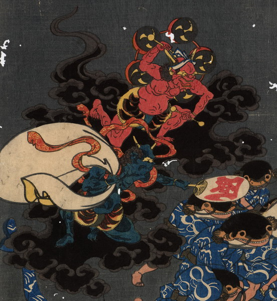

風神と雷神。風神は青緑色の肌、雷神は赤い肌をして、いずれも頭に2本角を生やし、虎皮の腰巻きをまとって、黒雲に乗っている。風神は大きな袋を右肩に担ぎ、風と書かれた団扇を持った左手を前に突き出している。雷神は鉢巻きをして背に連太鼓を背負い、両手に撥をかまえている。
出典：親書誌：U426_nichibunken_0184：大合戦図；ダイカッセンズ／日付：2010／資源識別子：U426_nichibunken_0184_0002_0000
Copyright (c)2010- International Research Center for Japanese Studies, Kyoto, Japan. All rights reserved.